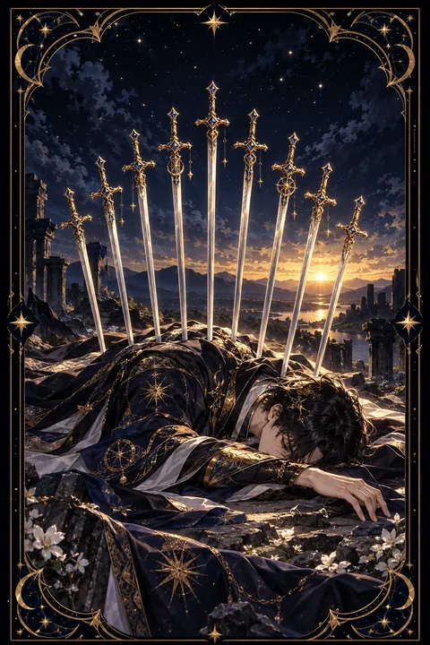

검 10 카드 — 끝에서 시작되는 새벽
검 10 카드 한눈에 보기
검 10 카드 상징 읽기

동네보살의 카드 그림은 전통 라이더–웨이트 덱의 뜻을 새 그림으로 옮긴 것입니다. 아래 상징 설명은 전통 덱의 그림을 기준으로 합니다.
검 10은 해 질 녘 물가에 엎드린 인물과 그 위로 줄지어 선 열 자루의 검을 보여 줍니다. 검의 수트에서 가장 큰 숫자인 10은 한 흐름이 더 나빠질 수 없는 지점까지 왔다는 뜻입니다. 끝까지 내려왔기 때문에 이제 올라갈 일만 남았다는 역설도 함께 담고 있습니다.
하늘은 위쪽이 검게 가라앉아 있지만 지평선 쪽에서는 금빛 새벽이 밝아 오고 있습니다. 가장 어두운 시간 뒤에 새날이 온다는 약속입니다. 먼 산과 잔잔한 물은 폭풍이 지나간 뒤의 고요함을 나타냅니다.
인물이 덮은 붉은 망토는 삶의 열정이 아직 꺼지지 않았음을 뜻합니다. 바닥에 놓인 손은 축복을 내리는 손가락 모양을 하고 있어 고통스러운 끝에도 의미와 배움이 있다는 점을 알려 줍니다. 이 카드는 비극보다 한 장의 이야기가 완전히 닫히는 순간을 그린 그림입니다.
검 10 카드 정방향 뜻
정방향 검 10은 한 시기가 고통스럽게 마무리되는 순간을 뜻합니다. 오래 버텨 온 일이 끝나거나 믿었던 관계에서 상처를 받는 등 더는 되돌리기 어려운 지점에 닿았을 수 있습니다. 몸과 마음이 지쳐 다 내려놓고 싶은 기분이 드는 것도 자연스러운 일입니다.
하지만 이 카드의 핵심은 바닥이라는 사실 자체에 있습니다. 더 내려갈 곳이 없다는 것은 이제부터는 회복의 방향으로만 움직인다는 의미입니다. 끝난 것을 억지로 붙들기보다 인정하고 받아들이는 편이 회복을 앞당깁니다.
지금은 무리하게 새 일을 벌이기보다 충분히 쉬고 슬퍼할 시간을 주는 것이 좋습니다. 이번 일에서 얻은 교훈 하나를 적어 두면 같은 상처를 되풀이하지 않을 수 있습니다. 지평선의 새벽처럼 새로운 시작은 이미 가까이 와 있습니다.
검 10 카드 역방향 뜻
역방향 검 10은 가장 힘든 순간을 지나 서서히 몸을 일으키는 회복의 흐름입니다. 상처가 완전히 아문 것은 아니지만 일상을 되찾을 힘이 조금씩 돌아옵니다. 주변의 도움을 받아들이고 작은 성취를 쌓으며 다시 서는 과정에 있습니다.
또 다른 해석으로는 이미 끝난 일을 받아들이지 못하고 붙잡고 있는 상태를 가리킵니다. 되돌릴 수 없는 상황을 계속 되새기며 스스로 상처를 덧나게 하고 있지는 않은지 살펴볼 필요가 있습니다.
회복에는 시간이 필요합니다. 한 번에 예전으로 돌아가려 하기보다 잠, 식사, 산책처럼 기본적인 생활부터 바로잡아 보세요. 지난 일에서 배운 점만 남기고 나머지는 흘려보낼 때 새로운 문이 열립니다. 무엇보다 스스로에게 회복할 시간을 허락하는 너그러움이 필요합니다.
연애에서 검 10 카드
솔로라면 지난 연애의 끝이 남긴 상처가 아직 새로울 수 있습니다. 누군가를 다시 만날 생각이 들지 않는 것은 자연스러운 반응이니 억지로 서두르지 않아도 됩니다. 혼자인 시간 동안 자신을 돌보고 무엇을 원하는지 정리해 두면 다음 인연을 더 건강하게 맞이할 수 있습니다.
사귀는 사람이 있다면 관계가 큰 고비에 이르렀거나 더는 이어 가기 힘든 지점에 닿았을 수 있습니다. 반복되는 상처를 참고만 있다면 이 관계가 서로에게 어떤 의미인지 솔직하게 이야기할 때입니다. 끝을 선택하든 새로 시작하든 지금까지의 방식은 여기서 마무리해야 합니다. 어떤 결정을 내리더라도 자신을 탓하기보다 스스로를 다독이는 것이 먼저입니다. 믿을 만한 친구와 속마음을 나누는 것도 무너진 마음을 추스르는 데 큰 힘이 됩니다.
재회·속마음 질문에서 검 10 카드
재회 질문에서 검 10은 이전의 관계가 한 번 완전히 끝났다는 점을 분명히 보여 줍니다. 같은 모습 그대로 다시 이어지기는 어렵다는 뜻입니다. 지금은 상대를 되돌리려 애쓰기보다 스스로의 상처를 돌보는 시간이 필요합니다. 역방향으로 나왔다면 시간이 흐르며 감정이 정리되고 새로운 관계로 다시 만날 여지가 생길 수 있습니다. 그렇더라도 예전의 문제를 그대로 둔 채 돌아가는 것은 같은 끝을 되풀이하는 일이 될 수 있습니다. 먼저 내 마음이 회복되었는지 확인해 보세요. 상처가 아문 뒤 다시 생각해도 늦지 않으며 그때의 판단이 지금보다 훨씬 선명할 것입니다. 혼자 결론을 내리기 어렵다면 가까운 이와 이야기하며 마음을 정리해 보세요.
일·금전에서 검 10 카드
일과 직장에서는 하던 프로젝트나 역할이 끝나거나 뜻하지 않은 좌절을 겪을 수 있는 시기입니다. 억울하고 허탈한 마음이 들더라도 남은 일을 깔끔하게 정리하는 것이 다음 기회를 위한 준비가 됩니다. 이 경험은 경력의 끝이 아니라 방향을 다시 잡는 전환점이 될 수 있습니다. 함께 일했던 사람들과의 관계를 좋게 마무리해 두면 뜻밖의 자리에서 다시 도움을 받을 수 있습니다.
재정 쪽에서는 지출이나 손실이 한 번에 드러나 바닥을 확인하는 때일 수 있습니다. 현재 상황을 숨기지 말고 정확히 파악한 뒤 가장 급한 것부터 하나씩 해결해 나가세요. 무리한 만회 시도는 피하는 것이 좋습니다. 끝난 일은 기록만 남기고 정리한 뒤 새 계획표를 여는 것이 좋습니다.
검 10 카드는 예일까 아니오일까
지금 묻는 일이 이미 한 흐름의 끝에 닿아 있어 원래 바라던 방식으로는 이루어지기 어렵다는 뜻에서 아니오로 봅니다. 대신 끝을 받아들이면 새로운 가능성이 열린다는 메시지가 함께 담겨 있습니다.
자주 묻는 질문
검 10 카드 역방향은 나쁜 뜻인가요?
역방향 검 10은 가장 힘든 순간을 지나 서서히 몸을 일으키는 회복의 흐름입니다. 상처가 완전히 아문 것은 아니지만 일상을 되찾을 힘이 조금씩 돌아옵니다. 주변의 도움을 받아들이고 작은 성취를 쌓으며 다시 서는 과정에 있습니다.
검 10 카드가 연애 질문에 나오면요?
솔로라면 지난 연애의 끝이 남긴 상처가 아직 새로울 수 있습니다. 누군가를 다시 만날 생각이 들지 않는 것은 자연스러운 반응이니 억지로 서두르지 않아도 됩니다. 혼자인 시간 동안 자신을 돌보고 무엇을 원하는지 정리해 두면 다음 인연을 더 건강하게 맞이할 수 있습니다.
타로 카드는 어떻게 뽑나요?
타로 카드 페이지에서 78장을 섞으면 그중 22장이 펼쳐집니다. 마음이 가는 세 장을 고르면 과거·현재·미래 자리에 놓이고, 한 장씩 뒤집어 자리와 방향에 맞는 풀이를 읽습니다. 정방향과 역방향은 섞는 순간 정해집니다.